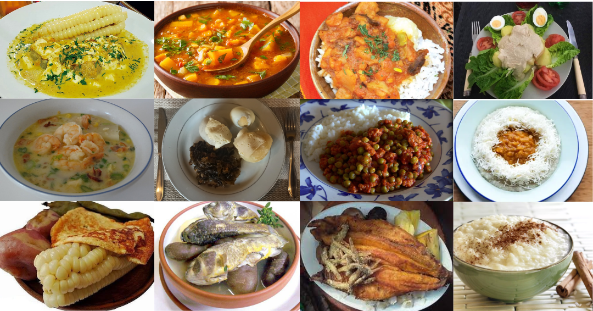

La Semana Santa en Bolivia es una celebración religiosa de gran importancia
para la población católica del país. Durante esta semana, se conmemora la pasión,
muerte y resurrección de Jesucristo, siguiendo tradiciones y rituales arraigados en la cultura boliviana.
La Semana Santa comprende diversos eventos y actividades, como procesiones, representaciones teatrales de la
Pasión de Cristo, misas especiales y actividades de reflexión y penitencia. En varias ciudades y pueblos,
se llevan a cabo procesiones multitudinarias con imágenes religiosas, música sacra y rituales tradicionales
que atraen a fieles y turistas por igual. La Semana Santa es también un momento de reunión familiar y de
renovación espiritual para muchos bolivianos.
La Semana Santa en Bolivia es una celebración religiosa de gran importancia
para la población católica del país. Durante esta semana, se conmemora la pasión,
muerte y resurrección de Jesucristo, siguiendo tradiciones y rituales arraigados en la cultura boliviana.
La Semana Santa comprende diversos eventos y actividades, como procesiones, representaciones teatrales de la
Pasión de Cristo, misas especiales y actividades de reflexión y penitencia. En varias ciudades y pueblos,
se llevan a cabo procesiones multitudinarias con imágenes religiosas, música sacra y rituales tradicionales
que atraen a fieles y turistas por igual. La Semana Santa es también un momento de reunión familiar y de
renovación espiritual para muchos bolivianos.

En este sitio encontrar un listado de los platos tipicos de semana santa
Tambien encontra una seccion de los dias de la semana santa
Mas una seccion de curiosidades sobre esta festividad